Corsi di pittura, disegno e scrittura a Torino e dintorni
Corsi e workshop di pittura, acquerello, disegno, calligrafia, collage e scrittura a Torino, Cuneo e dintorni.
Cerca tutti i workshop53 attività in programma · aggiornato il 27 ottobre 2026
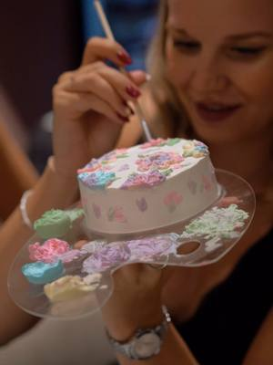
mar27ottCucinaCake & Chill: dipingi la tua tortamartedì 27 ottobreCentro (TO)con Limaco’s Lab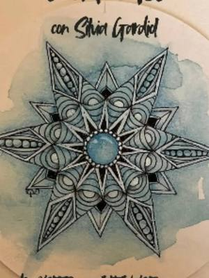
dal27ottPittura e scritturaZentangle: disegno per restare nel presenteda martedì 27 ottobre a martedì 8 dicembre, ogni 15 giorni, 17:30–19:00Pinerolo (TO)con Silvia Gardiol per 39/ Tramediffuse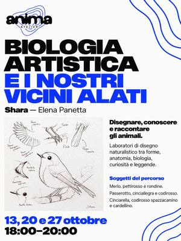
dal13ottPittura e scritturaBiologia artistica: disegnare gli uccellida martedì 13 ottobre a martedì 27 ottobre, ogni martedì, 18:00–20:00Santa Rita (TO)con Shara (Elena Panetta) per Anima Atelier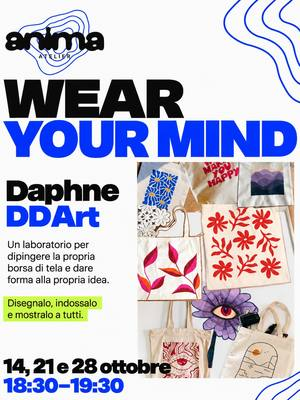
dal14ottPittura e scritturaWear Your Mind: dipingi la tua borsada mercoledì 14 ottobre a mercoledì 28 ottobre, ogni mercoledì, 18:30–19:30Santa Rita (TO)con Daphne DDArt per Anima Atelier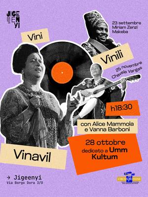
mer28ottPittura e scritturaVini, vinili e vinavil: collagemercoledì 28 ottobre, 18:30Aurora (TO) · Gratiscon Alice Mammola e Vanna Barboni per Jigeenyi- gio29ottPittura e scritturaAperi-workshop: fiori in pittura acrilicagiovedì 29 ottobre, 18:00–20:00Borgo Po (TO) · esauritocon Si Performance Artistiche per TObed
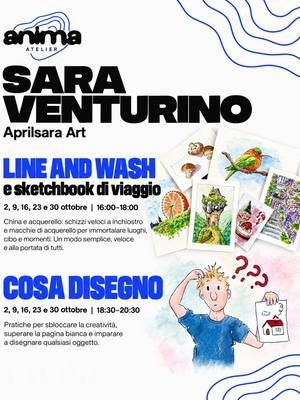
dal2ottPittura e scritturaLine and Wash: china, acquerello e sketchbookda venerdì 2 ottobre a venerdì 30 ottobre, ogni venerdì, 16:00–18:00Santa Rita (TO)con Sara Venturino per Anima Atelier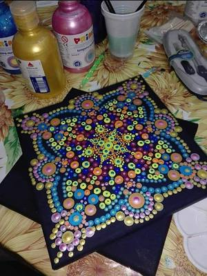
ven30ottPittura e scritturaMagico mondo dei mandala: su telavenerdì 30 ottobre, 17:30–19:30Nichelino (TO) · 35 €con Nikolinka Nikolova per Galleria Tempio della Luce- dal2ottPittura e scritturaCosa disegno: superare la pagina biancada venerdì 2 ottobre a venerdì 30 ottobre, ogni venerdì, 18:30–20:30Santa Rita (TO)con Sara Venturino per Anima Atelier
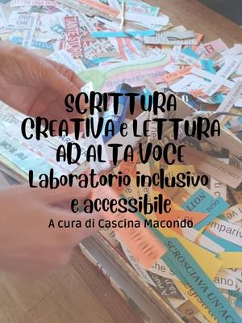
dal16ottPittura e scritturaScrittura creativa: leggere e raccontareda venerdì 16 ottobre a venerdì 28 maggio, ogni venerdì, 18:30–20:00Barriera di Milano (TO) · Gratiscon Cascina Macondo per Bagni Pubblici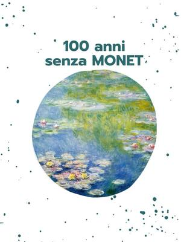
ven30ottPittura e scritturaAperitivo d’artista: dipingere come Monetvenerdì 30 ottobre, 18:30–20:30Borgo Po (TO) · 35 €con Laura Raduazzo per TObed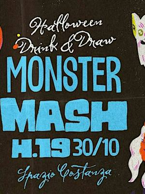
ven30ottPittura e scritturaMonster Mash: drink & draw di Halloweenvenerdì 30 ottobre, 19:00–21:30Vanchiglia (TO) · 18 €con Club di Disegno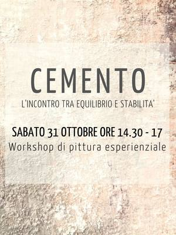
sab31ottPittura e scritturaPittura creativa e cemento su telasabato 31 ottobre, 14:30–17:00Ciriè (TO)con Veronica Carvelli (Spazio Nikeore)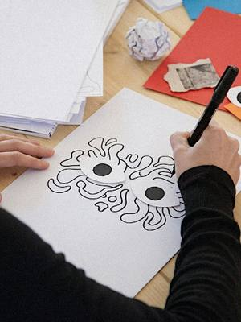
sab31ottPittura e scritturaArchivio fantasma: collage delle pauresabato 31 ottobre, 15:00–18:00Centro (TO) · 25 €con Collettivo Comò per Studio 17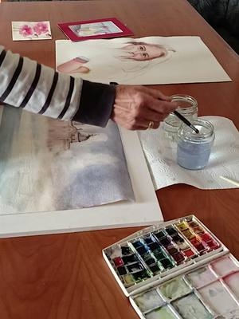
sab31ottPittura e scritturaLa via dell’acqua: laboratorio di acquerellosabato 31 ottobre, 17:30–19:30Nichelino (TO) · 35 €con Fernanda Prudenzano per Galleria Tempio della Luce- sab31ottPittura e scritturaHalloween creativo: dipingi la tua t-shirtsabato 31 ottobre, 17:30–20:00Borgo Po (TO) · 60 €con Si Performance Artistiche per TObed
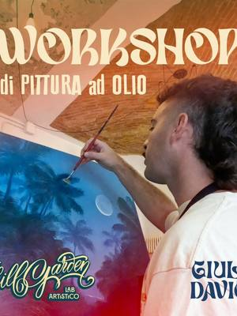
dom1novPittura e scritturaPittura a olio su tela: pomeriggiodomenica 1 novembre, 14:00–19:00San Salvario (TO) · 60 €con Giulio Davico per El Chill Garden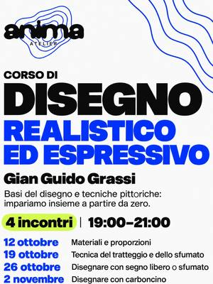
dal12ottPittura e scritturaCorso di disegno: realistico ed espressivoda lunedì 12 ottobre a lunedì 2 novembre, ogni lunedì, 19:00–21:00Santa Rita (TO)con Gian Guido Grassi per Anima Atelier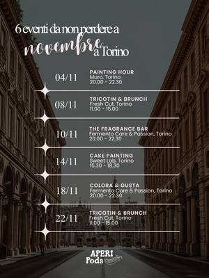
mer4novPittura e scritturaPainting Hour: pittura su telamercoledì 4 novembreBarriera di Milano (TO) · 39 €con Aperi Pods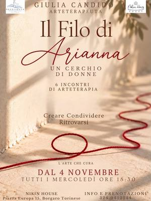
dal4novPittura e scritturaIl Filo di Arianna: arteterapia per donneda mercoledì 4 novembre, ogni mercoledì, 18:30Borgaro Torinese (TO)con Nikin House- mer4novPittura e scritturaIl Cervello Poeta: laboratorio creativomercoledì 4 novembre, 19:00San Donato (TO) · 30 €con Psicolab
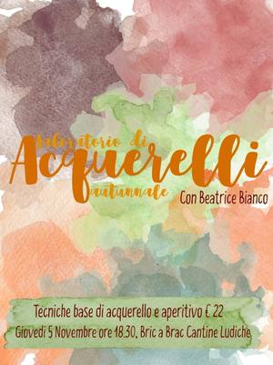
gio5novPittura e scritturaAcquerelli 2.0: aperitivo e acquerello d’autunnogiovedì 5 novembre, 18:30Peveragno (CN) · 22 €con Beatrice Bianco per Bric a Brac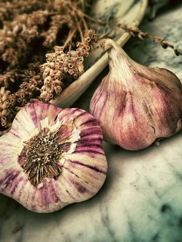
sab7novPittura e scritturaElixirs: art journal e fire cidersabato 7 novembre, 10:00–12:30Aurora (TO) · 35 €con Kiva per Velvet Truffle Riot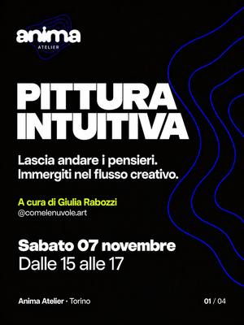
sab7novPittura e scritturaPittura Intuitiva: colori in libertàsabato 7 novembre, 15:00–17:00Santa Rita (TO)con Giulia Rabozzi per Anima Atelier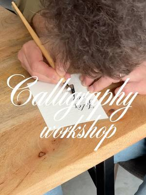
dal10novPittura e scritturaCorso di calligrafia: tre serate col penninoda martedì 10 novembre a martedì 24 novembre, ogni martedì, 19:00–20:30Aurora (TO) · 25 € a lezionecon Noemi Venturino per Velvet Truffle Riot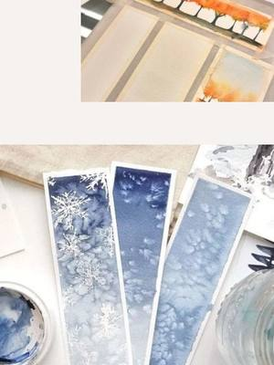
ven13novPittura e scritturaWinter is coming: arte in inglesevenerdì 13 novembre, 18:30–20:30Cuneo (CN) · 35 €con Chantal per Atelier Crea-Arti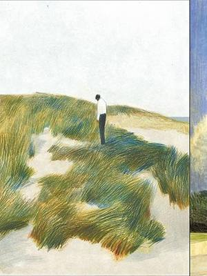
dal13novPittura e scritturaMasterclass Andrea Serio: matita e pastelloda venerdì 13 novembre a domenica 15 novembre, 18:30Lingotto (TO) · 300 € · esauritocon Andrea Serio per Print Club Torino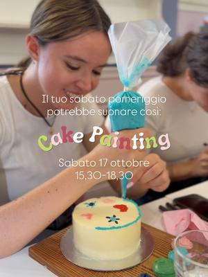
sab14novCucinaCake Painting: decora e dipingi una tortasabato 14 novembreCentro (TO) · 50 €con Aperi Pods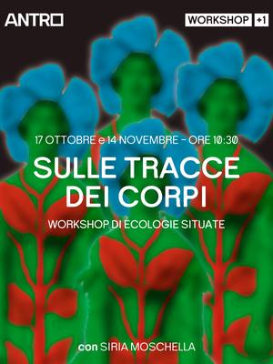
sab14novPittura e scritturaSulle tracce dei corpi: collage collettivosabato 14 novembre, 10:30Torino · Gratiscon Siria Moschella per Antro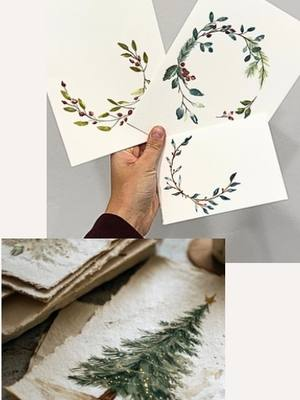
dom15novPittura e scritturaBiglietti di Natale ad acquerellodomenica 15 novembre, 10:00–12:00Cuneo (CN) · 35 €con Angelica Nolasco per Atelier Crea-Arti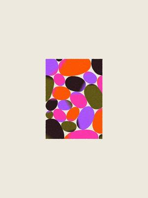
mer18novPittura e scritturaPop Collage: ritagliare e ricomporremercoledì 18 novembre, 19:00–21:30Aurora (TO) · 35 €con Arianna per Velvet Truffle Riot dom22novPittura e scritturaGlass painting: calice dipinto e vinidomenica 22 novembre, 17:00–19:00Cuneo (CN) · 35 €con Angelica Nolasco per Atelier Crea-Arti
dom22novPittura e scritturaGlass painting: calice dipinto e vinidomenica 22 novembre, 17:00–19:00Cuneo (CN) · 35 €con Angelica Nolasco per Atelier Crea-Arti- sab28novPittura e scritturaTra immagini e parole: collage espressivosabato 28 novembre, 10:00–12:00Torinocon Soraia Aguirre per Spazio IAIA
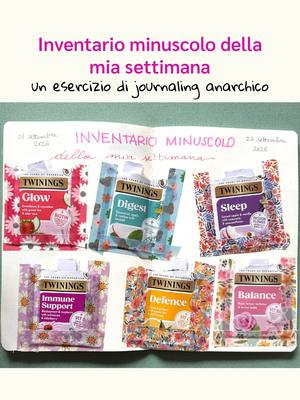
dom29novPittura e scritturaJournaling: stickers con fiori pressatidomenica 29 novembre, 09:00–12:30Borgo Po (TO)con Anema e Storie e La Cerca Regali per TObed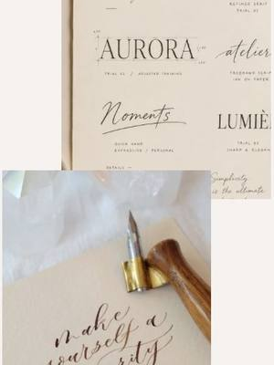
sab19dicPittura e scritturaLettering: scrivere bello per Natalesabato 19 dicembre, 09:30–12:00Cuneo (CN) · 35 €con Barbara Serafino per Atelier Crea-Arti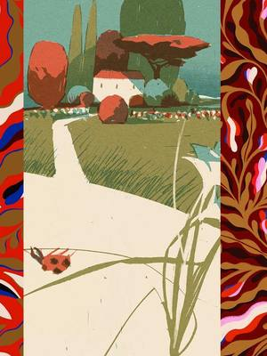
dal29lugPittura e scritturaCronache dal Giardino: disegno botanicoda giovedì 29 luglio a domenica 1 agosto, 18:30Lingotto (TO) · 450 €con Riccardo Guasco e Giovanna Giuliano per Print Club Torino- datada confermarePittura e scritturaQuello che resta: scrittura e memoriaData da confermareTorino · Gratiscon Luna Angrisano per Antro
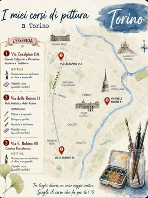
datada confermarePittura e scritturaCorsi di disegno e pittura: china e pastelloData da confermareTorinocon Barbara Sirtoli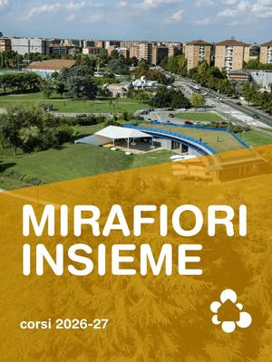
datada confermarePittura e scritturaCorso di pittura: porcellana e stoffaData da confermareMirafiori (TO)con Emilia Cerrato per Casa nel Parco- datada confermareAltroCascina Roccafranca: corsi della stagioneData da confermareMirafiori (TO)con Cascina Roccafranca
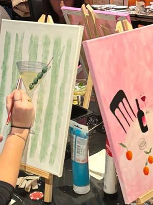
dataa sceltaPittura e scritturaPittura acrilica con drink in serraData a sceltaCampidoglio (TO) · da 55 €con Luzzi B dataa sceltaAltroTappezzeria e restyling: pouf e mobiliData a sceltaBarriera di Milano (TO) · da 20 €con Magazzini Tessili
dataa sceltaAltroTappezzeria e restyling: pouf e mobiliData a sceltaBarriera di Milano (TO) · da 20 €con Magazzini Tessili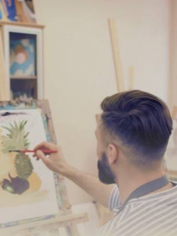
ognimarPittura e scritturaImpara a dipingere: corso di pittura a olioOgni martedìMondovì (CN)con Dalid Baez per Museo Della Casa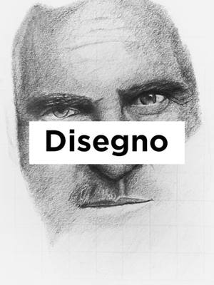
dataa sceltaPittura e scritturaNovel Academy: corsi di disegno e pitturaData a sceltaTorinocon Novel Academy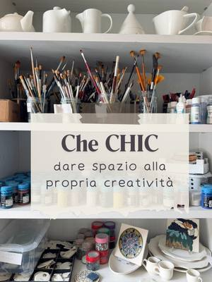
dataa sceltaPittura e scritturaCorso di pittura: su porcellanaData a sceltaCit Turin (TO)con Scialabà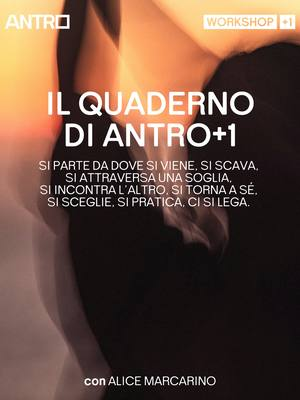
datada confermarePittura e scritturaIl quaderno di Antro+1: scrittura creativaData da confermare, 10:30Torino · Gratiscon Alice Marcarino per Antro- ognimerPittura e scritturaCorso d’arte in inglese: per ogni etàOgni mercoledì, 15:00–16:30Cuneo (CN) · 180 € per 6 lezionicon Chantal per Atelier Crea-Arti
- ognimarPittura e scritturaCorso di fumetto: personaggi e storieOgni martedì, 17:00–20:00San Mauro Torinese (TO)con Lorenzo Balocco per upTOyou
- ognivenPittura e scritturaPercorso artistico: il venerdì pomeriggioOgni venerdì, 17:00–19:00San Mauro Torinese (TO)con upTOyou
- ognimerPittura e scritturaCome si racconta una storia: scrittura creativaOgni mercoledì, 17:30–19:00Mirafiori (TO) · 50 € per 5 lezionicon Giulietta Vacis per Casa nel Parco
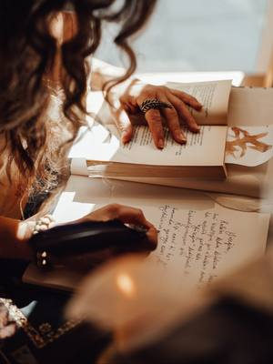
ognigioPittura e scritturaLaboratorio di scrittura: il quotidianoOgni giovedì, 18:00–20:00Barriera di Milano (TO) · 100 € per 8 incontricon Bunker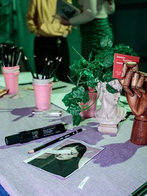
dataa sceltaPittura e scritturaClub di Disegno: illustrazione liberaOgni 2 mercoledì, 19:00–20:30Barriera di Milano (TO) · 15 € a lezionecon Malena De Luca per Bunker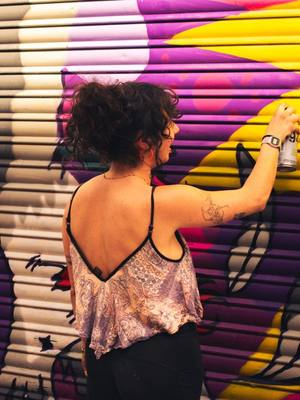
ognilunPittura e scritturaCorso di graffiti: writing urbanoOgni lunedì, 19:00–20:30Barriera di Milano (TO) · 20 € a lezionecon Nikka per Bunker